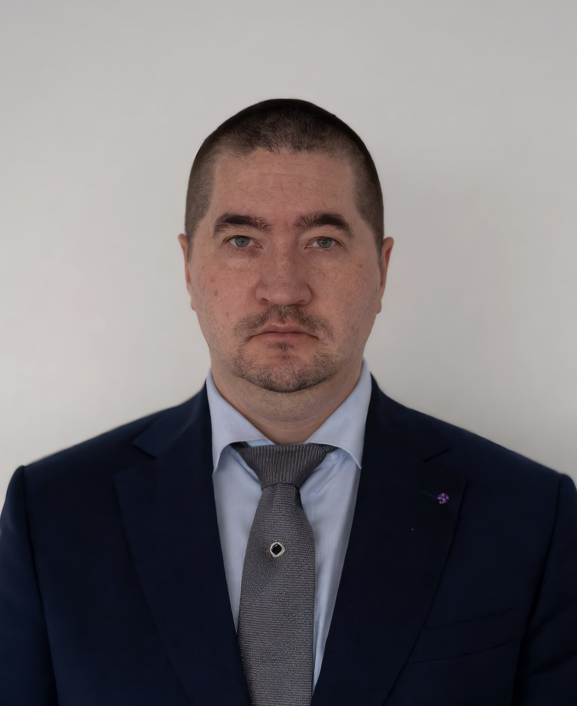

Москва · Московская область · дистанционно
Право, финансы и операционное управление частных медицинских клиник
Находим, где клиника теряет деньги: на претензиях пациентов, снятиях по ОМС, ошибках в учёте и рекламе. И настраиваем процессы так, чтобы потери не повторялись.
Кратко
Медуправа - команда юриста, финансового директора и руководителя операционного направления, которая сопровождает частные медицинские клиники в Москве, Московской области и дистанционно по всей России. Юридическое направление: претензии пациентов, экспертиза актов страховых компаний в рамках ОМС, договоры платных медицинских услуг, лицензия, персональные данные. Финансовое: управленческий учёт, финансовый директор на аутсорсе, финансовая модель. Операционное: управление и развитие клиники, служба сервиса и заботы о пациентах.
Направления
Три взгляда на одну клинику
Юрист видит риск, финансист - его цену, операционное направление - как процесс устроен для пациента и команды. Каждое направление можно подключить отдельно.
Юридическое направление
Претензии пациентов, экспертизы страховых по ОМС, договоры, лицензия, персональные данные и врачебная тайна.
Антон Штин, юрист
Подробнее →ФинансовоеФинансовое направление
Управленческий учёт, деньги к сроку платежей, KPI персонала и финансовая модель клиники.
Елена Штин, финансовый директор
Подробнее →ОперационноеОперационное направление
Операционное управление и развитие клиники, служба сервиса и заботы о пациентах.
Дарья Гаврилова
Подробнее →Диагностика клиники
С чего начинается работа
Диагностика показывает проблемные места клиники в формате «проблема - риск - норма - решение». Отчёт остаётся у клиники, даже если дальше вы работаете сами.
- Сведения о пациентах не покидают клинику: мы получаем только обезличенные документы.
- Документы сверяем с действующими редакциями нормативных актов, в том числе программными средствами.
- Нормативную базу проверяем еженедельно: 323-ФЗ, 326-ФЗ, 152-ФЗ, приказы Минздрава и ФФОМС.
Порядок
Четыре шага
Знакомство
Обсуждаем задачу и определяем, какое направление нужно первым.
Пакет документов
Клиника собирает обезличенный пакет по нашему перечню.
Анализ
Юрист, финансист или руководитель операционного направления разбирают документы в своей части.
Отчёт и план
Показываем проблемы, их цену и порядок исправления.
Команда
Кто работает с клиникой

Антон Штин
Юрист, руководитель юридического направления. Управленческий стаж с 2007 года, с 2020 года - частная юридическая практика, пять лет сопровождения медицинской клиники.
Елена Штин
Финансовый директор. Более 20 лет в финансовой сфере: управленческий учёт, контроль денежных потоков, финансовые модели.

Дарья Гаврилова
Операционное управление и развитие, служба сервиса и заботы. Выстраивает путь пациента и работу команды клиники.
Дела недели
Разбираем ситуации клиник с трёх сторон
Каждую неделю в сообществе ВКонтакте - одно дело: юрист показывает риск, финансист считает цену, операционное направление показывает, как ситуацию видит пациент. Без имён, с нормами и цифрами.
Вопросы
Частые вопросы
Чем занимается Медуправа?
Мы сопровождаем частные медицинские клиники по трём направлениям: право, финансы, операционное управление и сервис. Выявляем проблемные места клиники, помогаем найти возможности и настраиваем бизнес-процессы так, чтобы клиника не теряла деньги на претензиях, проверках и ошибках в учёте.
С каким регионом вы работаете?
Основной регион - Москва и Московская область. Большую часть работы выполняем дистанционно, поэтому работаем с клиниками по всей России; выезд в клинику - по договорённости.
Нужно ли передавать вам сведения о пациентах?
Нет. Документы клиника готовит в нашей программе на своём компьютере: она закрывает ФИО, полис, СНИЛС, дату рождения, адрес и диагноз, в том числе на сканах, и собирает зашифрованный пакет. Если обезличить нельзя, заключаем соглашение об обработке персональных данных по 152-ФЗ.
Можно ли подключить только одно направление?
Да. Каждое направление работает самостоятельно: можно заказать только экспертизу актов по ОМС, только финансового директора или только настройку службы сервиса. Комплексная диагностика полезна, когда непонятно, где клиника теряет больше.
Сколько стоят услуги?
Стоимость зависит от объёма задачи и размера клиники. Есть разовые услуги и абонентские пакеты. Стоимость финансового направления указана на его странице, по остальным - называем после знакомства с задачей и до начала работы.
Первый шаг
Расскажите о клинике
Опишите задачу в письме или сообщении. Ответим, с какого направления начать и какие документы понадобятся. Сведения о пациентах присылать не нужно.